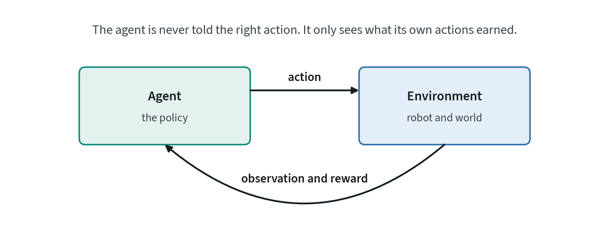
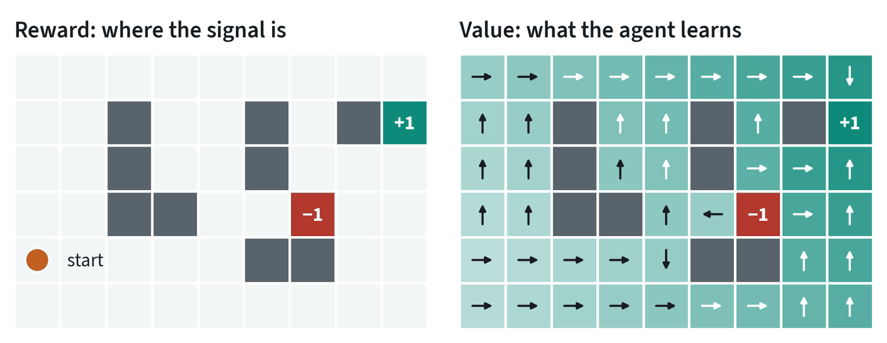
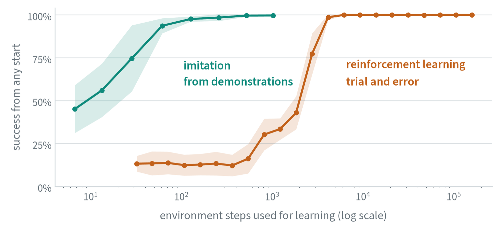
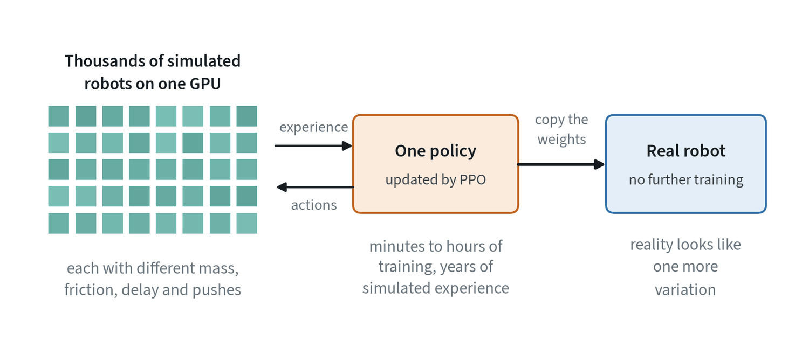
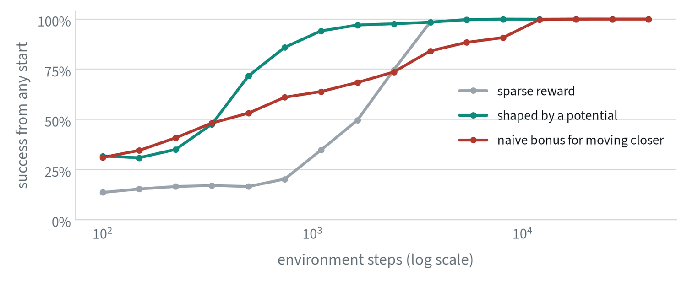

Learning from reward
Imitation learning copies a demonstrator. Reinforcement learning, or RL, has no demonstrator. The agent tries actions, receives a number called the reward, and adjusts itself to collect more reward over time.


What the agent maximises is the return: the sum of rewards over an episode, with later rewards usually counted a little less. Two difficulties follow from this definition. The agent must explore, because it cannot learn from outcomes it never tries. And it must work out which of its many actions earned a reward that arrived much later, which is called credit assignment.
Value and policy


The value of a state is the return the agent can expect from it. The reward says what is good now. The value says what is good in the long run, and it is what makes a sparse reward usable: every cell on the right knows which way to go, although only two cells on the left carry any reward.
| Family | What it learns | How it uses data | Typical use |
|---|---|---|---|
| Value-based (Q-learning) | The value of each action in each state | Reuses old experience | Discrete choices, games |
| Policy gradient (PPO) | The policy directly, nudged toward actions that did better than expected | Needs fresh experience after every update | Simulated locomotion at very large scale |
| Actor-critic, off-policy (SAC) | A policy and a value function together | Reuses old experience heavily | Real-robot learning, where every trial is costly |
The mathematics
The setting is a Markov decision process: states , actions , a transition rule , a reward and a discount between 0 and 1. The objective is the expected discounted return:
The value of acting optimally satisfies the Bellman equation, which says that the value of an action is its immediate reward plus the discounted value of the best action afterwards:
Q-learning turns that into an update. After each step, move the estimate toward the right-hand side, using the observed next state in place of the expectation:
The bracket is the temporal-difference error. The grid experiments in this note use exactly this rule.
Policy-gradient methods differentiate the objective with respect to the policy’s parameters instead. The result has a simple form: raise the probability of each action in proportion to how much better than expected it turned out.
is the advantage. PPO, the method behind most simulated locomotion, adds a limit on how far one update may move the policy. With :
The advantage itself is estimated with a weighted sum of temporal-difference errors, , where trades bias against variance.
Why it needs so many trials


The gap is the price of having no teacher. Early on the agent moves at random and almost never reaches the goal, so there is nothing to learn from. This is on a 6 by 9 grid. A robot arm has a continuous state, a continuous action and a camera image, and the gap grows accordingly.
The comparison is not one-sided. Imitation needed an expert to exist, and it can only match that expert. Reinforcement learning found the behaviour by itself, and it can go on to exceed the demonstrator.
Where it works today: simulated locomotion


Walking robots are trained almost entirely this way. Thousands of copies of the robot run in parallel on one GPU, so years of experience take hours. Each copy has slightly different physics, which is domain randomisation, and the resulting policy transfers to hardware without further training.
Three conditions make this work: the simulator is fast, contact between feet and ground is simple enough to simulate well, and the reward (move forward, stay upright, use little energy) is easy to write. Everyday manipulation fails all three. Contact with deformable and small objects is hard to simulate, and “the table is tidy” is hard to turn into a number.
Used together with imitation
For manipulation, reinforcement learning is now mostly a second stage after imitation.
- Offline RL. Learn from a fixed dataset with no new trials. Unlike imitation, it can use failed and mediocre episodes, because the reward tells it which were which. Its main danger is overrating actions the dataset never tried, so the methods deliberately stay close to the data.
- Fine-tuning on the robot. Start from an imitation policy, let it run, and reward success. A person steps in when it goes wrong, and those corrections become data too. Published systems report higher success and faster task completion than the imitation policy they started from.
The division of labour is sensible. Imitation gets the policy to the point where it sometimes succeeds, which removes the long flat start of the orange curve above. Reward then polishes it.
Reward shaping, measured


A sparse reward tells the agent nothing until it stumbles on the goal. Shaping adds a signal along the way, and how it is added matters. The safe form is potential-based: choose a function that is higher in better states, here the negative distance to the goal, and add
to every reward. Because whatever is gained by moving toward the goal is lost by moving away, no loop can accumulate reward, and it can be shown that the optimal policy is unchanged. In the figure it reaches 94% success where the sparse reward is at 35%.
The naive version pays a bonus for every step that moves closer and charges nothing for moving away. It helps at first and then holds the agent back, because stepping away and back again now pays. It still converges here, on a small grid with forced exploration. On a harder problem the same mistake produces an agent that circles for ever, collecting the bonus.
Reward is the hard part
- Sparse or shaped. A sparse reward, one point on success, is honest and slow to learn from. A shaped reward adds hints such as distance to the object. It is faster to learn from and easy to get wrong.
- The agent optimises what you wrote. If spinning in place earns shaped reward, the agent will spin. Watch the behaviour, not only the return.
- Someone has to measure success. On a real robot the reward comes from a person, a sensor, or a learned success detector, and its mistakes become the policy’s goals.
- Resets and safety. Each trial needs the scene put back, and exploration means trying things that fail. Both are cheap in simulation and expensive on hardware.
Common mistakes
- Reaching for RL first. If demonstrations are available, start with imitation. Add reward when you need to exceed them.
- Reading only the return curve. A rising return can come from an exploit in the reward. Watch rollouts.
- Trusting the simulator. A policy can exploit simulator errors. Test on hardware early.
Terms
- Reward
- A number the environment gives the agent after each step.
- Return
- The sum of rewards over an episode, usually discounted.
- Value
- The return expected from a state, or from an action in a state.
- Exploration
- Trying actions whose outcome is unknown in order to learn about them.
- On-policy and off-policy
- Whether a method needs fresh data from the current policy or can reuse old data.
- Offline RL
- Reinforcement learning from a fixed dataset with no new trials.
- Markov decision process
- The formal setting of reinforcement learning: states, actions, transitions, rewards and a discount.
- Bellman equation
- The recursive relation between the value of a state and the values of the states that follow it.
- Advantage
- How much better an action is than the average action in that state.
- Temporal-difference error
- The gap between a value estimate and the reward plus the discounted estimate of the next state.
Further reading
- Schulman et al., 2017. Proximal Policy Optimization Algorithms.
- Rudin et al., 2021. Learning to Walk in Minutes Using Massively Parallel Deep Reinforcement Learning.
- Levine et al., 2020. Offline Reinforcement Learning: Tutorial, Review, and Perspectives on Open Problems.
- Luo et al., 2024. Precise and Dexterous Robotic Manipulation via Human-in-the-Loop Reinforcement Learning.
- Physical Intelligence, 2025. π*0.6: a VLA That Learns From Experience.
- Schulman et al., 2015. High-Dimensional Continuous Control Using Generalized Advantage Estimation.
- Haarnoja et al., 2018. Soft Actor-Critic.